Scrappy AI Research Group
- scrappy adjective
- having a strong, determined character, and willing to argue or fight for what you want.
The scrappy research group is a collection of passionate, compassionate, and mutually-supportive researchers and researchers-in-training who want to solve problems that impact people's lives and, in the process, contribute to the technical disciplines they love. Scrappy researchers use any available theory and technology to tackle a problem. They're not afraid to learn whole new areas in pursuit of inspiration, embrace or eschew research trends, or apply an unfashionable technique if it gets good results. And they don't give up. They understand that when Einstein said that genius is 1% inspiration and 99% perspiration, he grossly underestimated the perspiration!
|
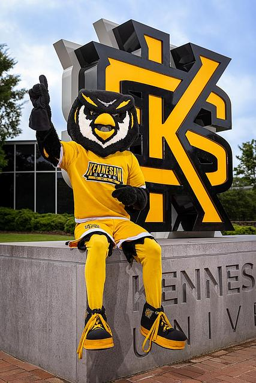 |
Resources:
- How to be a PhD student. Web site that accompanied a course all first-year PhD students took at Georgia Tech (I took the course before Nick and Alex taught it).
Current
Owls of Athena
The wisest of the owls. These owls have earned the pinnacle of academic degrees, the doctorate.
|
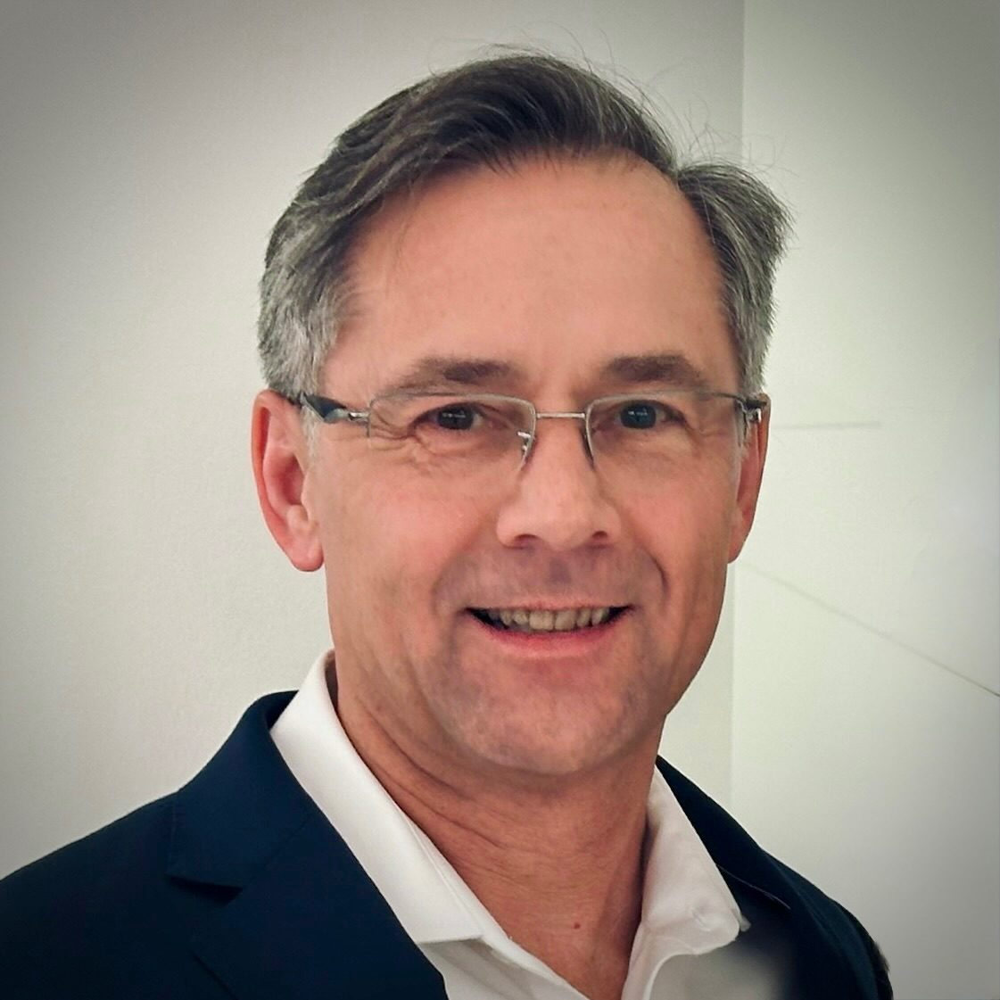 Christopher Simpkins AI, Reinforcement Learning, Deep Learning |
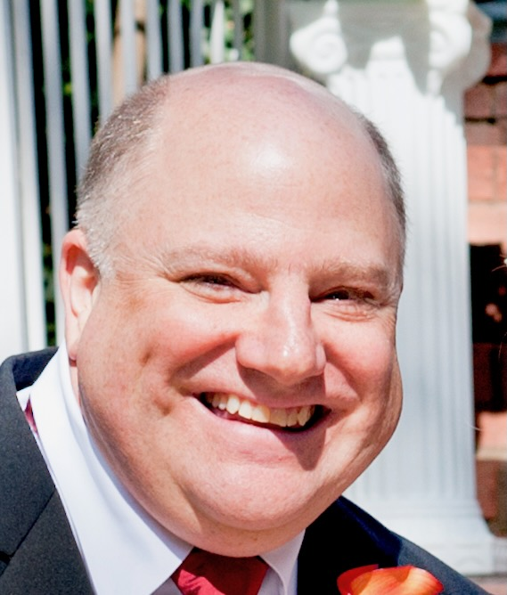 John Cortese Google Scholar Quantum Information Theory and Computing, Big Data and Machine Learning |
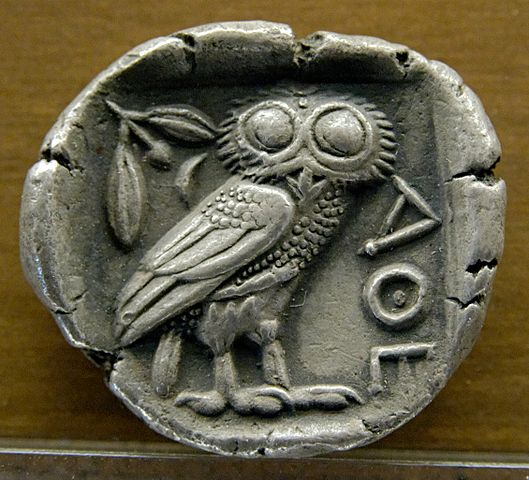 Your name here! Your interests here! |
Barred Owls (Ph.D. Students)
Just as barred owls expand their range in North America, Ph.D. students expand the range of scientific knowledge.
|
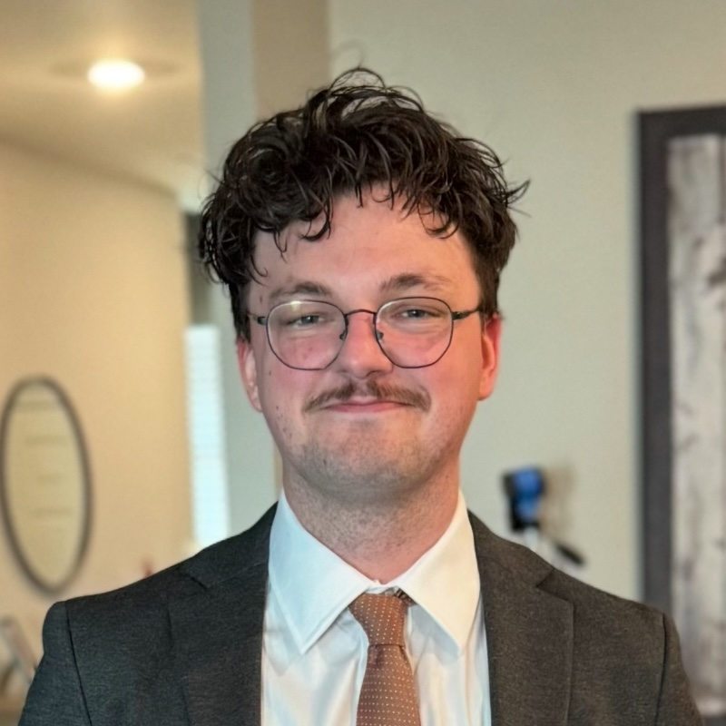 Nicholas Hodge Multiagent Reinforcement Leanring, NLP |
Tony Derado Simulation, Autonomous Agents, Robotics |
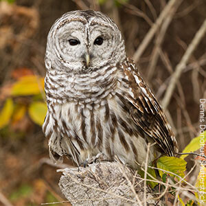 Your name here! Your interests here! |
Great Horned Owls (Master's Students)
Great horned owls are numerous and always on the hunt for opportunities.
|
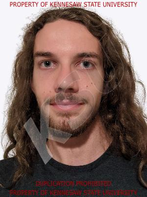 Liam Ussery Deep Reinforcement Learning, Game AI |
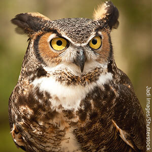 Your name here! Your interests here! |
Elf Owls (Undergraduates)
What elf owls lack in size of knowledge they make up for in enthusiasm.
|
Vlad Kuskov Explainable AI, Intelligent Tutoring |
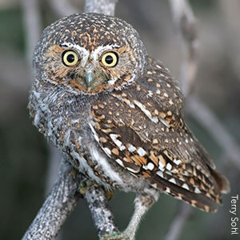 Your name here! Your interests here! |
Elf Owl Babies (High Schoolers)
Elf owl babies are eager to develop the skills they need to strike out on their own.
|
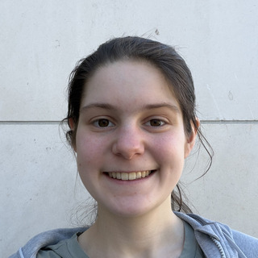 Charlotte Woodrum AI Engineering, Autonomous Agents, Robotics |
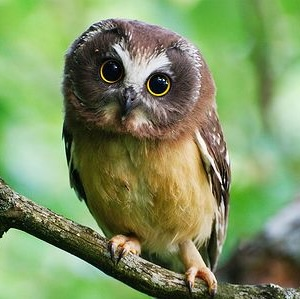 Your name here! Your interests here! |